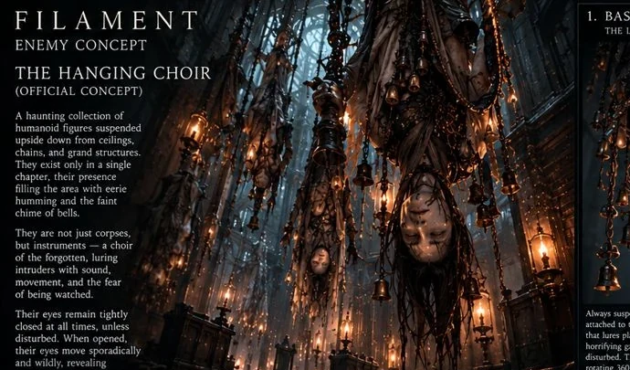

The Hanging Men
Small bells ring as they sway. Closed eyes may snap open and search wildly.
EYE MOVEMENT / UNPREDICTABLE
Horror born from war, fear and memory. Their silhouettes arrive before their footsteps — if they have footsteps at all.
Suspended upside down, they hum from rooms away. Their giant eyes and unnatural stillness create a horror of being watched, even when no one seems to be looking.
Every member of the Hanging Choir stays inverted. Every type can rotate its head. Every type has its own unsettling relationship with your gaze.

CONFIRMED ENEMY / CONCEPT ARTSmall bells ring as they sway. Closed eyes may snap open and search wildly.
They seem to keep their eyes shut. Look away, and you may catch them staring.
Former garment workers, still dressed in factory attire and armed with the tools of their trade.
These designs reflect different stages of development. Only one of the two creatures below is currently approved for the roster.
A humanoid with an unlit bulb for a head. A disabled Screep exposes an electrical wire — nearby power can change the encounter's outcome.
LIGHT / DARKNESS • ENVIRONMENTAL FINISHERA visual study without an approved final design, behavior, or place in the enemy roster.
VISUAL EXPLORATION ONLY